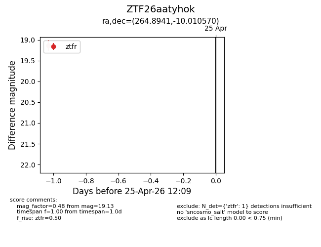
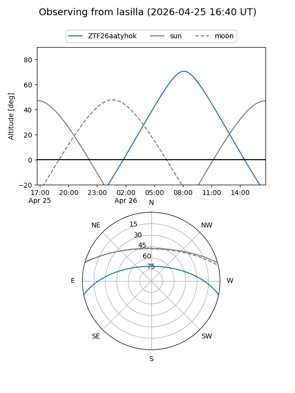
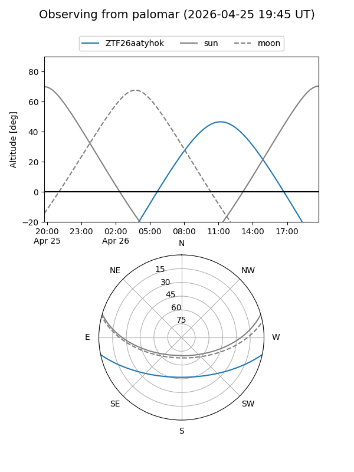

ZTF26aatyhok
Target ZTF26aatyhok at 2026-04-25 12:11
Aliases and brokers:
FINK: link
Lasair: link
ALeRCE: link
alt names
ZTF26aatyhok (ztf,fink_ztf)
Coordinates:
equatorial (ra, dec) = 264.8941,-10.01057
equatorial (HMS+DMS) = 17:39:34.59,-10:00:38.05
galactic (l, b) = (15.5516,+11.01504)
Flags:
Photometry:
last ztfr=19.13
1 ztfr detections
Lightcurve

Visibility


Additional plots